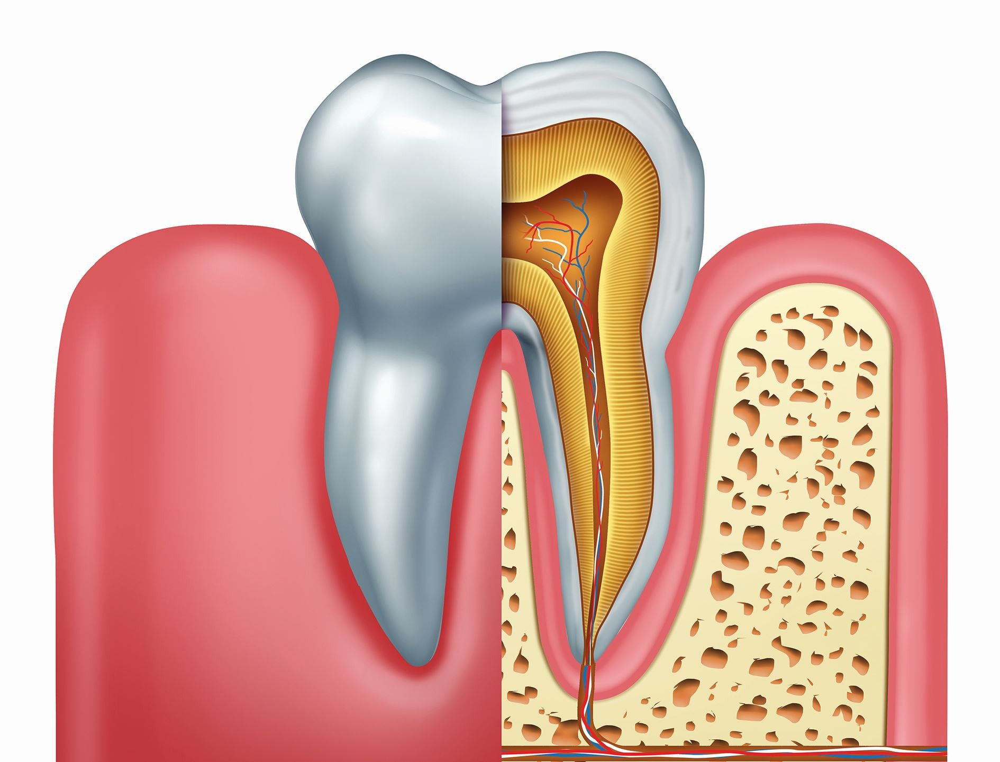
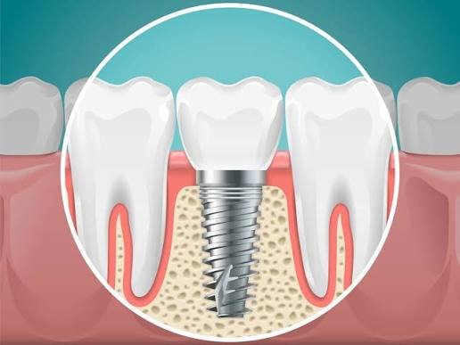
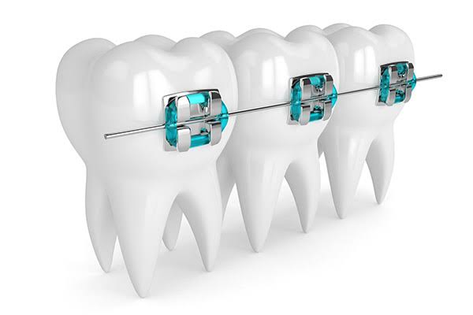
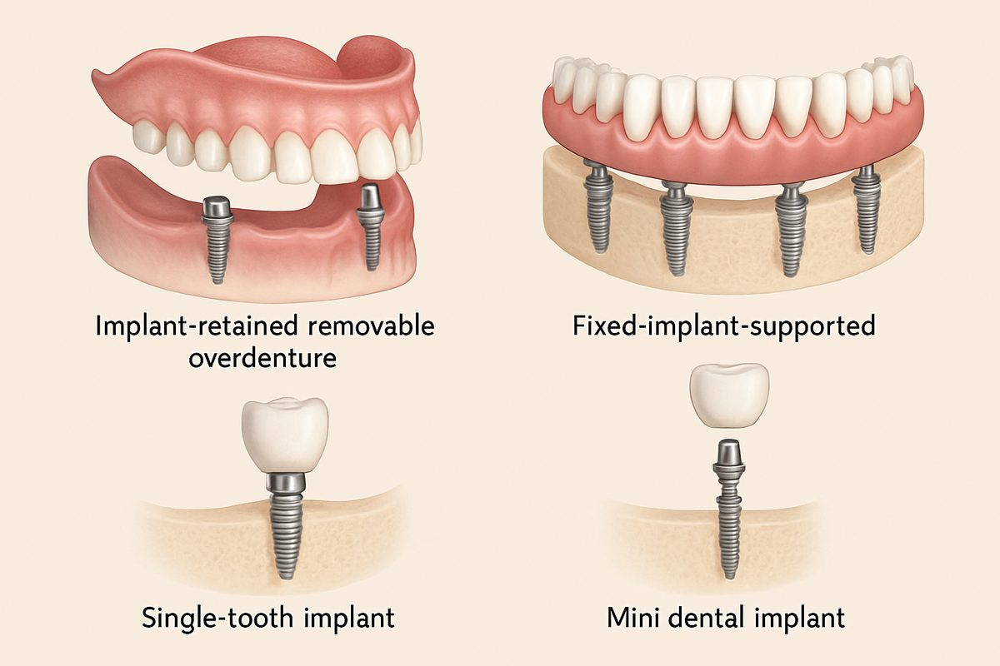

Our Services
حيث تلتقي الدقة السريرية بفن الابتسامة المثالية، نقدم
مجموعة مختارة من إجراءات طب الأسنان المتميزة المصممة خصيصاً للمرضى الأكثر تميزاً.
حيث تلتقي الدقة السريرية بفن الابتسامة المثالية، نقدم
مجموعة مختارة من إجراءات طب الأسنان المتميزة المصممة خصيصاً للمرضى الأكثر تميزاً.

رعاية ترميمية تركز على الحشوات والتيجان وإصلاح الأسنان، مصممة للحفاظ على بنية السن الطبيعية مع ضمان الراحة والمظهر الجمالي.

علاج جذور الأسنان لإنقاذ الأسنان المصابة بالتهاب أو تلف العصب، باستخدام تقنيات دقيقة تضمن التخلص من الألم والحفاظ على السن لأطول فترة ممكنة.

استعادة الأسنان المفقودة أو التالفة من خلال التركيبات الثابتة والمتحركة التي تجمع بين الوظيفة المثالية والمظهر الطبيعي للابتسامة.

تشخيص وعلاج الحالات الجراحية للفم والفكين، مع تقديم حلول آمنة ودقيقة لمختلف الإجراءات الجراحية المعقدة والبسيطة.

تصحيح اعوجاج الأسنان ومشاكل الإطباق للحصول على ابتسامة متناسقة وتحسين وظائف المضغ والنطق باستخدام أحدث تقنيات التقويم.

رعاية متخصصة لأسنان الأطفال في بيئة مريحة وآمنة، مع التركيز على الوقاية والعلاج المبكر لبناء صحة فموية سليمة منذ الصغر.
تشخيص وعلاج أمراض اللثة والعظام الداعمة للأسنان للحفاظ على صحة الفم ومنع فقدان الأسنان وتحسين صحة اللثة على المدى الطويل.

حل دائم لتعويض الأسنان المفقودة باستخدام زراعة الأسنان، لاستعادة المظهر الطبيعي والقدرة على المضغ بثبات وراحة.
جلسة خاصة مع أطبائنا المتخصصين لمناقشة احتياجاتك وأهدافك العلاجية، مع إجراء فحص شامل وتحليل رقمي لابتسامتك لوضع أفضل خطة علاجية.
نضع خطة علاجية مخصصة تناسب حالتك، تتضمن شرحاً واضحاً لجميع الإجراءات والنتائج المتوقعة لضمان تجربة علاجية دقيقة ومريحة.
نبدأ تنفيذ خطة العلاج بأعلى معايير الجودة والعناية، لنمنحك ابتسامة صحية طبيعية، وأكثر ثقة.